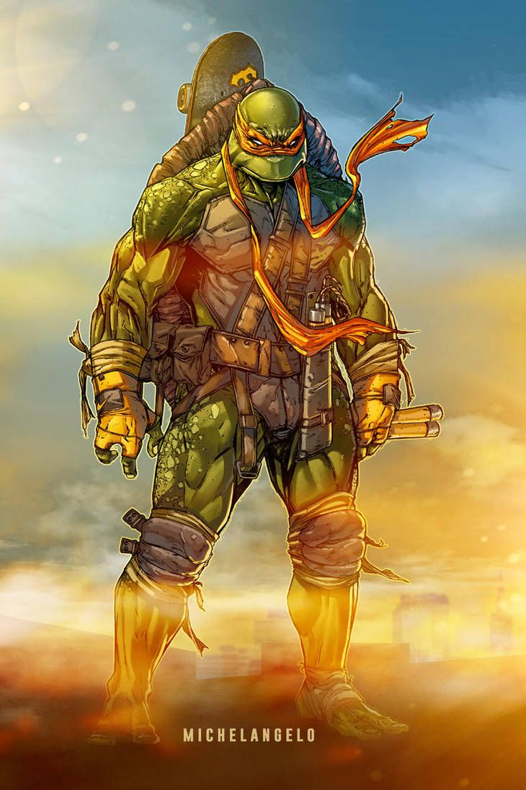

Michelangelo
In the Mirage comic books, Michelangelo was initially depicted as fun-loving, carefree, go lucky, and, while not as aggressive as Raphael, always ready to fight. He is much more serious-natured in the comic book than in the film incarnations, which have labeled his character a permanent "dude" talking teenager. It was Michelangelo's one-shot in this series that fleshed out most of the traits that have become synonymous with the character, such as his playfulness, empathy, and easygoing nature. In the one-shot story, Michelangelo adopts a stray cat (which he names Klunk) and also stops thieves from stealing toys meant for orphaned children. After their defeat at the hands of the Foot Clan, the Turtles, Splinter, April O'Neil, and Casey Jones retreat to a farmhouse in Northampton, Massachusetts which used to belong to Casey's grandmother. While there, April is worried to note that Michelangelo is not himself. He spends his days in the barn taking out his aggression on a punching bag. A scene shows him lashing out at his surroundings and repeatedly punching the wall of the barn until it breaks, then collapsing on it despondently, anger spent. The end of the story implies that Michelangelo's sorrow and frustration have been resolved, as subsequent issues restore Michelangelo's more relaxed, optimistic personality.
History
In the Archie Comics series, Michelangelo was initially presented very similarly to his 1987 cartoon portrayal — understandably, considering that the comic started as an adaption of the popular animated series. As the series progressed, Archie's "Michaelangelo" was presented as more mature than the cartoon version. This version developed also an interest in poetry. During a battle, he was temporarily blinded and later captured by the US military, whereupon he was interrogated and tortured. He was eventually rescued by his family and saved the life of the man who tortured him. One of his many skills in the Archie comics was the ability to communicate with animals. In a storyline set in the future, Michelangelo is shown to have become an artist whose main job is running an orphanage.